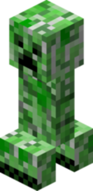
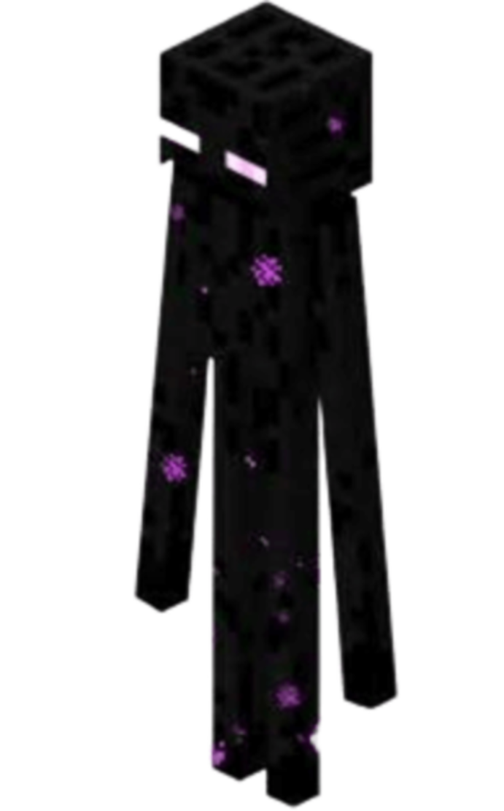
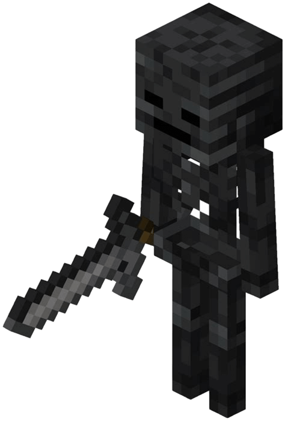
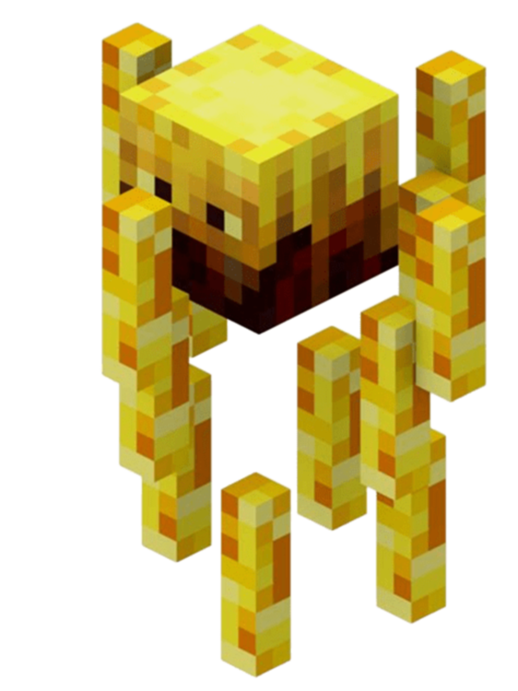
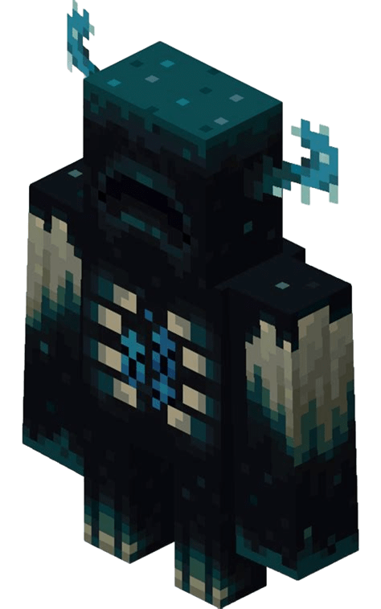
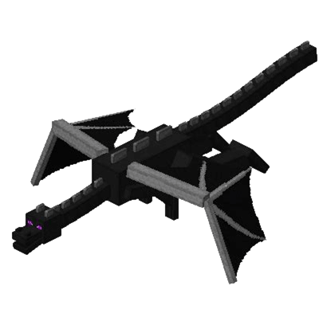

-
Zombie, o Caminhante Morto

Uma criatura clássica dos horrores noturnos. Lento, mas persistente, o Zombie persegue os aventureiros incautos que se encontram desprevenidos na escuridão.
ATK/ 500 DEF/ 400 -
Creeper, o Silencioso Explosivo
Silencioso e letal, o Creeper é uma ameaça constante para construtores e exploradores. Sua explosão é capaz de causar danos devastadores e alterar o cenário para sempre.
ATK/ 1200 DEF/ 100 -
Enderman, o Viajante das Dimensões
Com olhos brilhantes e um comportamento enigmático, o Enderman pode se teletransportar, pegando blocos e surpreendendo seus oponentes.
ATK/ 1600 DEF/ 1000 -
Wither Skeleton, o Guerreiro das Trevas
Um esqueleto sombrio que carrega uma espada de pedra. Suas toxinas podem enfraquecer até o mais resistente dos heróis.
ATK/ 1800 DEF/ 1500 -
Blaze, o Guardião do Nether
Um ser de fogo que patrulha fortalezas do Nether. Suas bolas de fogo são mortais e difíceis de evitar.
ATK/ 2000 DEF/ 1700 -
Warden, o Guardião Profundo
Habitante das profundezas, o Warden é uma força imparável. Com sentidos aguçados, ele pune qualquer um que se atreva a perturbá-lo.
ATK/ 3000 DEF/ 2500 -
Ender Dragon, o Mestre do Fim
A entidade suprema do End. Ender Dragon é o chefe final que protege o portal de saída, desafiando os jogadores em uma batalha épica.
ATK/ 3500 DEF/ 3000